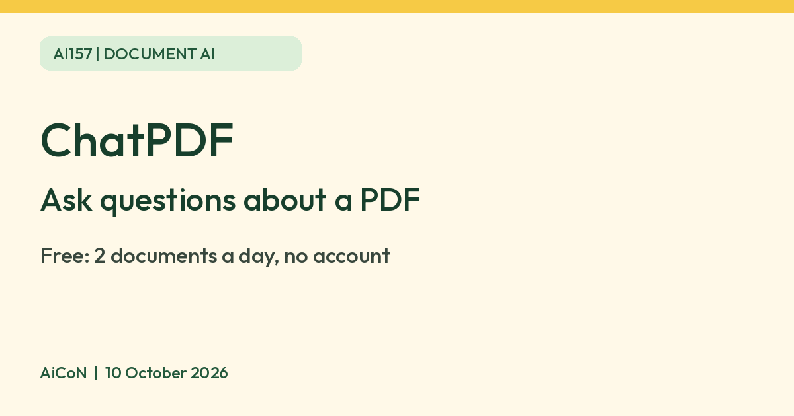

ChatPDF: ask questions about a PDF, 2 free documents a day
ChatPDF lets you upload a document and ask questions about it, with citations. The free plan covers 2 documents a day and needs no account. Avoid private papers.

What it is
ChatPDF lets you upload a document and ask questions about it in plain language. ChatPDF says it accepts PDF, Word, PowerPoint, Markdown and text files. Answers come with citations, and clicking one scrolls to the matching spot in the document so you can check it yourself.
Is it free
Yes, with a limit. ChatPDF says the free plan lets you analyze 2 documents every day, and you do not need an account to start. A paid plan, ChatPDF Plus, gives unlimited document analysis. We have not verified the current Plus checkout price, so we do not quote one. Check the price on the site before you pay.
Is it available in India
ChatPDF says it "works worldwide" and runs in any web browser. It does not publish a country list. We did not test it.
How to try it
- Open chatpdf.com and drop in a PDF.
- Ask a question, such as "What are the main points?" or "What does page 4 say about fees?".
- Click the citation under the answer to check it against the original text.
Limits to know
- Free use is 2 documents a day.
- The AI can misread a document. Check important answers against the source.
- Be careful with private papers. ChatPDF says documents are encrypted and you can delete them, but we would not upload ID cards, bank statements or medical reports.
- ChatPDF says it routes questions between OpenAI GPT-4o and GPT-4o-mini models, so your text goes to those services too.
- This is not legal, medical or financial advice.
- We did not test it ourselves.
Frequently asked questions
Do I need an account?
No. ChatPDF says you can start without one. An account adds saved history and multi-document chats.
Can I ask in Hindi or Malayalam?
ChatPDF says it accepts documents in any language and can chat in any language. Quality may vary, so check the answers.
Sources: ChatPDF, ChatPDF PDF AI page. Checked 10 October 2026.